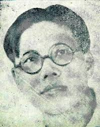
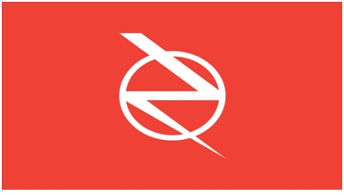

Phong trào nghiệp đoàn và chính trị hỗn loạn
Ngày 26 tháng 3 năm 1937, đảng cộng sản Đông Dương phát hành chỉ thị về tổ chức mới (công nhân) của Đảng: ‘’Chúng ta muốn có những tổ chức ái hữu tương tế mạnh mẽ hơn là những công hội đỏ (hiểu là các nghiệp đoàn) theo đuổi nghiêm túc một mục đích cách mạng nhưng chỉ tập hợp một nhóm nhỏ người’’.
Đấy là một bước lùi trong lúc mà hầu như ở khắp nơi những ủy ban hành động đã đặc biệt tiến hành một cách bất thường. Khá nhiều ủy ban bãi công lộ mặt trong các xí nghiệp. Phái cộng sản đối lập, xu hướng Trotskij, thâm nhập phong trào gây được niềm tin tưởng nhất là trong tầng lớp lao động thanh niên ở bốn chục nhà máy và công xưởng, trong giới công nhân bốc xếp ở cảng, trong Sở Thủy Binh Ba Son, Xưởng pháo binh, Đường Sắt, Đường Xe Điện, Công Ty FACI (Lò Rèn, Công Xưởng, Công Trường Đông Dương), Bưu Điện, Hãng Đông Á, Xưởng chế tạo Cao-su, Công Ty Điện Nước, trong các nhà in Poctail, Acde, Union, trong ba trại chữa xe Ô-tô lớn trong thành phố. Ở Chợ Lớn: Trong giới công nhân nhà máy Rượu Đông Dương, giới cu-li vác lúa gạo các nhà máy gạo Hiệp Xương, Đức Hiệp, Hàng Thái, Viễn Đông; tại các tỉnh: Trong hãng vét kinh Mỹ Tho, các lò gốm, lò gạch, lò đường ở các Tỉnh Gia Định, Thủ Dầu Một, Chợ Lớn...Hoạt động về nghiệp đoàn của họ lan tới trung tâm các Tỉnh lỵ Mỹ Tho và Trà Vinh.
Ngay từ tháng 2, trong lúc làn sóng bãi công dân lên mạnh mẽ không thể đàn áp nổi, Sở Mật Thám ghi: Anh hưởng các phần tử cách mạng theo Đệ Tứ Quốc Tế đã tiến triển ở Nam Kỳ, nhất là trong giới thợ thuyền khu vực Sài Gòn-Chợ Lớn. Thợ thuyền gia nhập phái xu hướng Trotskij nhiều hơn theo đảng cộng sản Đông Dương.
Tổ chức Liên Ủy Thợ Thuyền do những người Đệ Tứ hoạt động bí mật thành lập, triệu tập hội họp chiều thứ Bảy ngày 29 tháng 5 ở Bình Hòa, ngoại ô phía Bắc Sài Gòn, tại nhà Bà Thạnh Thị Mậu, mẹ Nguyễn Kim Lượng, người cảm tình. Đại biểu thợ 44 xí nghiệp thảo luận về điều lệ tổ chức Liên Ủy, bỗng nhiên mật thám ập vào bắt đi 62 chiến sĩ trong đó những người huy động chủ yếu thuộc xu hướng Đệ Tứ như Đào Hưng Long, Tạ Khắc Triêm, Võ Bửu Bình, Võ Thị Vân (bạn đời của Lư Sanh Hạnh)...
Khi được thả ra, họ tiếp tục thảo luận và sẽ đứng ở vị trí trung tâm các cuộc bãi công như trước khi họ bị bắt. Ngày 22 tháng 6, theo sáng kiến của Trần Văn Thạch, 45 người trong số đó lại tập hợp và bầu ra một ủy ban sáng lập nghiệp đoàn tại số 133 phố De Lagrandière (Gia Long).
Về phía cộng sản theo Stalin, Nguyễn Văn Tạo cũng đứng ra tổ chức một ủy ban nghiệp đoàn, tại số 34 phố Alsace Loraine (Phó Đức Chính) từ ngày 19.
Trong tuần sau, ở Hà Nội và Hải Phòng mỗi nơi một ủy ban tương tự xuất hiện.
Ngày 10 tháng 7, ngày mà dân Thợ Xe Lửa Sài Gòn bãi công cùng công nhân đường sắt xuyên Đông Dương, Sở Mật Thám đóng cửa trụ sở hai ủy ban nghiệp đoàn sau khi khám soát và bắt bớ các ủy viên.
Bộ Trưởng Mutet ghi:
Kết quả các cuộc bãi công cũng là tạo thuận lợi cho việc thành lập công hội thợ thuyền. Nhưng mục đích thực sự của các tổ chức ấy không phải là để binh vực những người làm công ăn lương. Những hội mới thành lập đó nhằm tạo cho phái cộng sản xu hướng Trotskij nắm được toàn giới thợ thuyền. (115)
Liền theo đó, mật thám bắt bớ hàng loạt. Ngày 24 tháng 7, khi nghiệp đoàn bí mật ở Công Ty chế tạo Cao-su quyết định đình công đoàn kết ủng hộ cuộc chiến đấu dân Thợ Xe Lửa, ba anh bạn khởi xướng bị bắt. Trong nhà một anh, mật thám tìm được nhiều báo bí mật xu hướng Trotskij như tờ Liên Hiệp, Tiến Quân (tên mới báo Thợ Thuyền Tranh Đấu) cùng là tờ Quần Chúng (đối lập chống Stalin từ Paris gởi về). Bảy chiến sĩ Đệ Tứ liên can lọt vào lưới mật thám. Cũng trong đêm đó, như không có gì xảy ra, truyền đơn nhóm Bolshevik-Léninisme tán thành Đệ Tứ Quốc Tế rải khắp vùng Sài Gòn-Chợ Lớn kêu gọi thợ thuyền hưởng ứng tổng bãi công. Nhưng người ta đã thấy Toàn Quyền Brévié đã hất chìm mọi phong trào đòi tự quyết như thế nào rồi.
Rạng đông ngày 2 tháng 9 năm 1937, mật thám lại vây ráp trong giới Đệ Tứ và những người cảm tình ở Sài Gòn.
Trong số đó có Tạ Khắc Triêm, cựu Thư Ký Sở Ba Son, anh cùng chị Võ Thị Vân và Kiều Công Quế (Trưởng kíp trạm xe lửa Sài Gòn), đã thừa cơ thâm nhập cuộc bãi công dân thợ đường sắt xuyên Đông Dương đang tiếp diễn, gây dựng các nhóm tán thành Đệ Tứ Quốc Tế ở Bắc và Trung Kỳ. (ở Quảng Ngãi, Huyện Mộ Đức và Đức Phổ, mật thám đã thu nhiều tờ báo Tranh Đấu và báo Thợ Thuyền Tranh Đấu (Lutte Ouvrière) từ Paris chuyển về, một truyền đơn của nhóm Tranh Đấu về việc ly khai giữa phái Stalin và phái Trotskij, cùng tập sách nhan đề Vụ Án Moscou).
Ngô Văn Xuyết cùng bị bắt hôm ấy, tập Vụ Án Moscou anh xuất bản sau khi ra tù hôm tháng 6 bị cấm lưu hành liền sau đó. Khi mật thám khám nhà Nguyễn Văn Soi (trước đây làm thợ tập sự ở Sở Ba Son) tìm thấy bộ đồ vật in truyền đơn bằng xoa xoa và những truyền đơn, trong đó có tờ Hiệu Triệu của Liên Đoàn Thợ Thuyền Sài Gòn-Chợ Lớn.
Ngày 9 tháng 9, Tòa Tiểu Hình xử 27 ủy viên hoạt động trong hai ủy ban sáng lập nghiệp đoàn vì tội ‘’lập hội bất hợp pháp’’: Nguyễn Văn Tạo và 6 người cộng sự, cùng với Trần Văn Thạch, Lê Văn Thử, Võ Thị Vân, Đào Hưng Long và Nguyễn Văn Cử bị kết án 2 tháng tù giam; Nguyễn Văn Số được tha bổng, còn các bạn anh bị án từ 15 ngày tù giam tới 2 tháng tù treo. Tòa thẩm án ngày 30 tháng 11, hủy phạt tù, chỉ phạt tiền: Tạo và Thạch mỗi người 50 franc, mấy người khác nhiều lắm là 25 franc.
Lịch sử chính thức của Hà Nội khi nói về phái Đệ Tứ thành lập ủy ban sáng kiến nghiệp đoàn, viết thế nầy:
Bọn thực dân lại cho Trần Văn Thạch, Nguyễn Văn Số v.v...lôi kéo một số người lập ra Ủy ban sáng kiến công hội, đặt trụ sở số nhà 133 đường De Lagrandière (Gia Long) ở Sài Gòn đa chống lại Ủy ban sáng kiến nghiệp đoàn của đảng ta. Phần đông thợ thuyền đều nhận rõ bản chất phản động của Trần Văn Thạch và Nguyễn Văn Số nến không theo bọn chúng. (116)
Tác giả sách đó vu khống như thế cũng chưa đủ, anh ta chỉ thông báo án tù treo phạt Nguyễn Văn Tạo và các đồng chí anh ta, không một chữ về Trần Văn Thạch và Nguyễn Văn Số.
Ngày 18 tháng 11, tòa xử các chiến sĩ nghiệp đoàn xu hướng Đệ Tứ hoặc cảm tình, bị giam từ hôm 24 tháng 7 và 2 tháng 9. Lê Văn Oánh, Dương Văn Tư, Nguyễn Văn Tiền, Nguyễn Văn Mẫn, Đoàn Văn Trương và Tạ Khắc Triểm bị kết án 1 hoặc 2 năm tù giam với 5 hoặc 10 năm biệt xứ; Nguyễn Văn Nho, Nguyễn Văn Trọng, Dương Văn Tương và Nguyễn Văn Soi, 6 tháng tù. Qua tháng giêng năm 1938, tòa thẩm án giảm án; Trương và Tương được tha bổng.
Bước đầu ly khai, tháng 6 năm 1937
Sau khi Thâu, Ninh và Tạo bị bắt hồi tháng 9 và 10 năm 1936, trong báo Tranh Đấu phần đông trong bộ biên tập là những người xu hướng Trotskij, họ công kích thẳng tay Mặt Trận Bình Dân đã phá hoại Đông Dương Đại Hội, không giữ lời hứa hẹn cải cách, giảm giá đồng bạc làm quần chúng thêm bần cùng khốn khổ, bao che những vụ đàn áp địa phương, đa số viên chức phản động vẫn được duy trì địa vị; chỉ một mình Toàn QuyềnRobert bị cách chức. Những người theo phái Stalin hoảng sợ trước chỉ trích Mặt Trận Bình Dân một cách răn rỏi. Ngày 17 tháng chạp năm 1936, họ viết cho bộ biên tập lá Thư tỏ thái độ không liên minh với những người xu hướng Trotskij nữa rồi họ bắt đầu tẩy chay tờ báo Tranh Đấu.
Xem xét trên phạm vi quốc tế, mặt trận hiệp nhất giữa phái xu hướng Trotskij và phái theo Stalin trong nhóm Tranh Đấu càng tỏ ra thật là nghịch lý. Ở Moscou những người Nga đứng về phía Trotskij đều bị lên án như rắn lục độc bỉ ổi, bị giam, bị đày, bị giết, vậy làm sao mà những người đồng xu hướng Trotskij ở Đông Dương lại thoát khỏi Stalin lên án? Một vụ án Moscou thứ hai gọi là ‘’Vụ án 13 người’’ vừa kết thúc vào sớm ngày 1 tháng 2 năm 1937, xử bắn mười ba người, trong có Rakovsky, Piatakov và một số đảng viên kỳ cựu đảng Bolshevik. Họ bị lôi xuống bùn trước khi bị giết. Chưởng Lý Vichinsky cáo họ đã âm mưu cùngBáo Chiến Sĩ lại xuất hiện
Tuy nhiên Tạ Thu Thâu và các bạn anh vẫn duy trì thống nhất què quặt với phái Stalin trong nội bộ nhóm Tranh Đấu. Vì thế mà ngày 23 tháng 3 năm 1937 Hồ Hữu Tường lại tái bản tờ Chiến Sĩ, ‘’cơ quan binh vực giai cấp vô sản và chiến đấu theo chủ nghĩa Karl Marx’’, với tiêu đề ‘’Vô sản toàn toàn thế giới liên hiệp lại!’’. Tờ báo nhắc lại nguyên tắc thống nhất mặt trận theo ý Trotskij: Đi riêng mà đánh chung kẻ thù. Nhóm Tranh Đấu cùng Đông Dương Đại Hội đều trái hẳn nguyên tắc ấy. Tờ báo tố cáo Stalin lừa dối trong vụ án mới ở Moscou, đăng lại ‘’Di chúc của Lenin’’ trong đó Lenin gọi các đồng chí đề phòng thái độ quá tàn bạo của Stalin. Có bài giải thích lại lý luận cách mạng thường trực của Trotskij.
Ngày 1 tháng 6, tờ báo vạch ra những nét lớn về chính phủ Léon Blum hoạt động trong 12 tháng qua: Ngân sách 30 tỷ dự bị chiến tranh; giải tán đảng ‘’Ngôi sao Bắc Phi’’; phong tỏa Tây Ban Nha và cấm các đội E chiến sĩ tình nguyện sang bảo vệ cách mạng Tây Ban Nha. Vào tháng 3, cảnh sát do Dormoy (phái xã hội) chỉ huy bắn quần chúng công nhân biểu tình chống bọn phản động ở Calasse, 5 người chết và 150 người bị thương. Cảnh vệ lưu động bắn dân thợ đình công ở Métlaouivà Mahdia(Tunisia), 21 người chết và hàng trăm người bị thương. Ở Pháp, báo chí cách mạng bị tịch thu; tại Đông Dương, bãi công bị đàn áp, phát biểu chính trị bị đe dọa...
Đảng cộng sản Đông Dương, để phù hợp với những nghị quyết của Đại Hội 7 Quốc Tế Cộng Sản, đứng ra vận động nhằm xoa dịu tình hình xã hội: Đảng đề xướng thành lập Mặt Trận Dân Chủ Đông Dương, một khối tập hợp mọi giai cấp chỉ đòi những quyền tự do tư sản, không còn nói đến chủ nghĩa đế quốc Pháp, đến giải phóng dân tộc, cũng không còn gợi tịch thu ruộng đất để chia cho dân cày. (117)
Cuộc vận động này kéo dài đến tận tháng 8 năm 1939 (nghĩa là cho đến khi có Hiệp Ước Hitler-Stalin). Tháng 3 năm 1937, Nguyễn An Ninh binh vực trên báo Tranh Đấu một ý tưởng tương tự, nhưng luận điệu có hơi khác đôi chút: ‘’Một tập hợp rộng lớn của quần chúng Đông Dương chống lại phản động thuộc địa, một loại mặt trận nhân dân không phân biệt chủng tộc và giai cấp’’, trong đó anh mời tham gia cả hai đảng vô sản, các đại diện những tầng lớp trung lưu, những trí thức tán thành Đại Hội và cả những người Pháp lưu trú thuộc phái tả.
Tạ Thu Thâu buộc phải lên án cái khối đoàn kết đó: ‘’Liên minh tranh đấu trên những điểm cụ thể, chúng tôi đồng ý. Đoàn kết nhập khối các giai cấp, chúng tôi không bao giờ nghĩ đến.’’
Chính phủ thuộc địa đàn áp ác liệt đến mức là chỉ cần có tí báo động là ‘’Mặt Trận Bình Dân Đông Dương’’ bị tan rã khi bọn tư sản tiến bộ rời khỏi mặt trận. Những phần tử tư sản này không làm cho chế độ thuộc địa hiện hành hoảng sợ. Nhưng họ lại bắt buộc chúng ta phải từ bỏ chương trình xã hội chủ nghĩa, từ bỏ triển vọng cách mạng. Nếu anh muốn có ‘’Mặt Trận Bình Dân Đông Dương’’, nghĩa là nhập khối đoàn kết với những giai cấp khác, anh sẽ mất hết tự do của anh. Hỡi các bạn trí thức và các tầng lớp trung lưu, các anh chỉ tán thành thỏa ước để chiến đấu cụ thể thôi, chứ đừng tham gia các khối đoàn kết, các bạn sẽ tự do tiến thối trước cuộc đán áp của đế quốc, còn giai cấp công nhân sẽ tự do tiến lên khi các bạn cần trở mặt nhìn lại phía sau. Các bạn không thể lao vào những hoạt động riêng tư của thợ thuyền và nông dân, chính giai cấp vô sản đóng vềi trò chính trong phong trào dân chủ [thực sự].
Đến đây chính là lúc chúng ta gửi lời chào từ biệt nhà cách mạng cao thượng Nguyễn An Ninh. Không tưởng vĩ đại của anh đã rời bỏ anh. Mặt trận dân chủ nhân dân Đông Dương đã thu hút anh. Anh sẽ ủng hộ sổ liên danh của phái theo Stalin trong cuộc bầu cử hội đồng quản hạt tháng 4 năm 1939. Tạ Thu Thâu vẫn giữ tình bạn với anh và ở bên cạnh anh luôn tại ngục Côn Đảo vào năm 1943 khi anh phải vượt qua ngưỡng cửa âm giới vào năm 43 tuổi.
Nhưng chúng mình hãy trở lại năm 1937.
Cuộc bầu cử mới vào Hội Đồng Thành Phố Sài Gòn, tháng 4 năm 1937.
Tháng 2 năm 1937, Hội đồng tham chính quốc gia ở Hà Nội khẳng định hủy quyền Hội Đồng Thành Phố Nguyễn Văn Tạo, Tạ Thu Thâu và Dương bạch Mai, cuộc tuyển cử mới cho ta thấy lần hợp tác lần cuối cùng giữa hai phái Đệ Tứ (xu hướng Trotskij) và Đệ Tam (xu hướng Stalin) trong một cuộc vận động chung.
Chương trình của họ bao gồm cải thiện đời sống thợ thuyền, nhân viên, viên chức, tiểu thương; phổ thông đầu phiếu cả nam lẫn nữ; quyền tự do nghiệp đoàn; các quyền tự do dân chủ; quyền triệu tập Đông Dương Đại Hội; ân xá toàn bộ...
Quần chúng sục sôi trong thành phố, dân thợ Sở Ba Son phát bãi công ngày 6 tháng tư. Theo Sở Mật Thám cuộc bãi công này ‘’đặc biệt cho thấy rõ ảnh hưởng của nhóm Tranh Đấu trong quần chúng thợ thuyền Sài Gòn.’’
Ngày 21 tháng 4, tại cuộc họp về tuyển cử ở Rạp Hát Thành Xương do Phan Văn Hùm chủ trì, những người Pháp có chân trong Đảng Xã Hội đứng ra ủng hộ mấy anh Hội Đồng Thành Phố bị hủy chức. Dân chúng dự thính chào mừng nhiệt liệt. Trong số 1515 phiếu bầu, Thâu được 765 phiếu, Tạo 735 và Mai được 715, ba người đắc cử, thắng phái lập hiến. Như vậy ảnh hưởng của nhóm Tranh Đấu vẫn không bị suy xuyển đối với các tầng lớp trung lưu ở Sài Gòn, mặc dù họ cổ động truyên truyền nhằm hướng binh vực thợ thuyền rõ rệt.
Thắng lợi của họ là một sự thử thách mới đối với chính quyền thực dân. Qua tháng 5, bọn thống trị tống Thâu và Tạo vào Khám Lớn (lúc đó Thâu đang đi vận động ở miền Tây). Ngày 19, hai người bị cáo âm mưu lật đổ chế độ hiện hành căn cứ vào những bài đăng trên tờTranh Đấu từ ngày 9 tháng 11 năm 1936! Sở Mật Thám lại truy tầm Ninh, anh sẽ bị bắt vào ngày 5 tháng 9.
Cuộc chia rẽ
Trong khi Nguyễn Văn Tạo và Tạ Thu Thâu đồng bị giam, Gitton đầu phân bộ thuộc địa của Đảng Cộng Sản Pháp, viết cho phái Đệ Tam ở Sài Gòn đang cộng sự ở báo Tranh Đấu:
Paris, ngày 19.5.1937
Chúng tôi xét rằng không thể nào tiếp tục hợp tác giữa Đảng và những người xu hướng Trotskij, theo các chỉ thị [ở Moscou] chúng tôi đã nhận được để truyền lại các đồng chí, về thái độ đối với những người xu hướng Trotskij ở Đông Dương. Chúng tôi đã nhận được bức thư của đồng chí Văn Nguyễn cũng vẫn nói về tình hình ở Đông Dương và sự hợp tác với những người theo Trotskij.
Chúng tôi sẽ chuyển bức thư trên về Nhà [Moscou] kèm theo ý kiến riêng của chúng tôi.
Bí Thư, Gitton.
Thế rồi ngày 29 tháng 5, phái Đệ Tam ở Sài Gòn vội tung ra tờ báo Tiền Phong (L'Avềnt-garde), tiếng Pháp, trên báo đó hô vang vọng theo Moscou, coi những người xu hướng Đệ Tứ Quốc Tế là ‘’anh em sinh đôi với chủ nghĩa phát xít’’:
Tại Hội Nghị toàn thể Ban Chấp Hành Trung Ương Đảng Cộng Sản Liên Sô, ngày 3 tháng 3 năm 1937, trong điện văn đồng chí Stalin của chúng ta đã nhận xét rằng chủ nghĩa Trotskij không còn là một trào lưu chính trị trong giai cấp thợ thuyền nữa như bảy tám năm về trước. Chủ nghĩa Trotskij là bạn đồng minh, là tay sai của chủ nghĩa phát xít.
Tờ Chiến Sĩ phản ứng tức thời, trong số báo ngày 1 tháng 6 đăng tiểu đề ‘’Những người theo Trotskij là anh em sinh đôi của chủ nghĩa phát xít. Ở nhóm Tranh Đấu những người theo Stalin và những người theo Trotskij là anh em. Vậy những người theo Stalin phải chăng là những người anh em của những người anh em sinh đôi của chủ nghĩa phát xít hay không?’’.
Ngày 12 tháng 6, tờ Tiền Phong đăng một bức thư của Nguyễn An Ninh công kích tờ Chiến Sĩ về vấn đề Mặt Trận Bình Dân.
Được thả tạm thời vào ngày 7 tháng 6, Tạo đề nghị với Thâu một thỏa thuận hợp tác mới mà Tạo cho rằng còn có thể thực hiện được và rất ước mong miễn là Thâu ngưng công kích Mặt Trận Bình Dân ở chính quốc. Hai hôm sau, Thâu trả lời cho Tạo đề nghị: Bên phía Thâu và đồng chí sẽ ngưng công kích chính phủ Léon Blum-Mutet trong vòng ba tháng, sau đó nếunhư chính phủ đó vẫn khước từ ân xá, tự do chính trị, tự do nghiệp đoàn, và không thanh trừng những viên chức phản động ở đây thì sẽ tiếp tục công kích lại. Thâu vừa dứt lời, Tạo và bạn đồng đảng dứt khoát bỏ đi. Thế là việc ly khai hoàn tất và từ đây Thâu và các bạn tự do chỉ trích trong tờ Tranh Đấu.
Cuối tháng 6, dưới mục ‘’Huấn luyện về chủ nghĩa Karl Marx theo quan điểm chúng ta’’, tờ báo bắt đầu đăng Lịch Sử Quốc Tế Cộng Sản và những nghị quyết bốn đại hội đầu tiên (từ 1919 đến 1922). Vào tháng 7, tờ báo phản ứng lại những Vụ Án Moscou, đăng toàn bài văn ‘’Tôi tố cáo!’’ của Trotskij, trả lời những điều vu khống của phái Stalin. Bài nầy những người tổ chức mít ting đọc tại quảng trường đua ngựa ở New York trước 7 ngàn thính giả ngày 9 tháng 2 năm 1937.
Nhưng cũng trong thời gian ấy, tờ báo tiếp tục tố cáo những vụ bê bối ở địa phương, những thói tàn bạo của cảnh sát, của chủ tỉnh này hay khác, những tham nhũng của địa chủ này điền chủ nọ, đưa ra ánh sáng chẳng hạn như tên cướp đất Lê Quang Liêm. Tờ báo tường thuật chi tiết về vụ tước đoạt đất lối 1500 nông dân, nạn nhân của bọn cho vềy cắt họng, do Trần Văn Thạch điều tra tại các Tỉnh Rạch Giá và Long Xuyên, sau khi Tạ Thu Thâu trao những đơn nông dân bị cướp đất này thỉnh nguyện Thống Đốc Nam Kỳ. Kết quả duy nhất là những người kêu nài bị quở đã giao thiệp với một ông ‘’hội đồng cộng sản’’ rồi người ta đuổi họ ra khỏi phòng giấy.

Tạ Thu Thâu
Báo Tranh Đấu, tiếng nói của Đệ Tứ Quốc Tế
Thế là từ nay tờ Tranh Đấu có thể phô bày những bất đồng sâu sắc với Đệ Tam Quốc Tế. Tờ báo xuất bản dưới biểu trưng Đệ Tứ Quốc Tế và cách mạng thế giới (quả địa cầu có làn chớp xẹt qua).

Những người Đệ Tứ xác định không hờ hững đối với các vấn đề nông thôn. Trotskij đã từng nhắc nhở vấn đề ấy là quan trọng dường nào cho những môn đệ đầu tiên ở Nam Kỳ từ năm 1930. Song bởi họ đến chậm trong môi trường nông thôn, nơi mà đảng Thanh Niên - trước khi hóa thành cộng sản - đã hoạt động từ năm 1926, họ bị phái Đệ Tam vu khống rằng họ ‘’miệt thị nông dân’’. Vả lại nhóm rất ít người, họ chỉ có thể vất vả thâm nhập vào nông thôn không ngoài một phạm vi nào đó.
Ngày 11 tháng 7 năm 1937, Ban Bí Thư Đệ Tứ Quốc Tế xem kinh nghiệm tờ báo thuộc mặt trận thống nhất đã quá thời, khuyên nhóm Tranh Đấu nên tiếp tục xuất bản như một cơ quan tập hợp quần chúng, vừa binh vực một cách cụ thể từng trường hợp những người bị bóc lột nhiều nhất, như cu-li, thợ thuyền và dân cày, và phổ biến những mục tiêu xúc cảm (ân xá, yêu sách kinh tế, chấm dứt những vụ bê bối về đất đai), tờ báo cũng vừa thực hành trọn quyền chỉ trích đối với xu hướng và hành động của phái Đệ Tam ở địa phương. Tờ Chiến Sĩ phải xuất bản trở lại, chuyên chú về giáo dục chính trị, trình bày những vấn đề cơ bản. Để đối phó với đàn áp, mà người ta có thể lường trước là sẽ mở rộng, Ban Bí Thư khuyên nên giữ lại một số tối thiểu người phụ trách bộ máy bí mật, về tổ chức, về in ấn.
Mặc dầu bị tịch thâu và bị cấm, những sách phổ thông bằng chữ Quốc Ngữ vẫn tiếp tục ra đời như Ngày 1 tháng 8 và nạn đế quốc chiến tranh, Vì sao ủng hộ Mặt Trận Bình Dân Pháp? Biện chứng pháp phổ thông của Phan Văn Hùm...
Ở Paris tờ Quần Chúng (Masses) cùng Quốc Tế IV (IVe Internationale) ủng hộ nhóm Tranh Đấu. Hoàng Quang Dụ, Nguyễn Văn Tư và các bạn phát hành tờ Quần Chúng ngày 15 tháng 9 năm 1936. Họ là những người bị loại khỏi phân bộ thuộc địa của Đảng Cộng Sản Pháp vì họ phản đối các Vụ Án Moscou đầu tiên (19 tháng 8 năm 1936), và chống lại sự thoái hóa cải lương của Đệ Tam Quốc Tế. Những chiến sĩ cảm tình này liên hệ với nhóm Tranh Đấu, họ có thể thông tin ở Pháp về những cuộc bãi công và những vụ đàn áp ở Đông Dương dưới thời chính phủ Mặt Trận Bình Dân.
Tờ Quốc Tế IV, nguyệt san của Nhóm người Đông Dương xu hướng Trotskij ở Paris, ra đời ngày 1 tháng 10 năm 1937. Tờ báo giải thích Đệ Tam Quốc Tế đã chủ trương như thế nào với cái luận thuyết ‘’chủ nghĩa xã hội trong một xứ một’’, phản lại chủ nghĩa quốc tế vô sản và cuộc đấu tranh giai cấp, khi Quốc Tế Đệ Tam buộc những đảng cộng sản phải ủng hộ chính sách sáp lại gần một số đế quốc.
Tờ Quốc Tế IV tháng 11 viết:
Đảng viên Đệ Tam Quốc Tế thúc đẩy quần chúng An Nam ủng hộ nhóm đế quốc ‘’dân chủ’’ chống lại khối Đức-Ý-Nhật. Họ quên mất rằng cái từ dân chủ, lá cờ tam tài và bài quốc ca La Marseillaise đối với người An Nam cũng tương đương như những vụ cướp bóc, ám sát, và bóc lột của đế quốc Pháp ở Đông Dương.
Cuộc đàn áp ập xuống, không phân biệt xu hướng Stalin hay Trotskij
Ngày 2 tháng 7 năm 1937 Tạo và Thâu, bị buộc tội từ tháng 5, nay bị kết án mỗi người hai năm tù, nhưng vẫn được tự do trong thời gian kháng cáo.
Ngày 8, hôm trước cuộc bãi công Đường sắt xuyên Đông Dương ở Sài Gòn, mật thám lục soát Tòa Soạn báo Tranh Đấu, truy tầm Tạ Thu Thâu, Trần Văn Thạch, Phan Văn Chánh tại Trụ Sở Ủy Ban sáng kiến nghiệp đoàn và lùng bắt nhiều người, trong đó có Nguyễn Văn Tạo, Nguyễn Văn Nguyễn và Trần Văn Hiển thuộc tờ báo Tiền Phong.
Thống Đốc Pagies vừa mới chấp thuận trao Toàn Quyền cho Sở Mật Thám trực tiếp được tiến hành mọi sự lục soát và bắt giam khi xét thấy cần thiết.
Thâu theo chân Tạo vào tù ngày 22 tháng 7 (là ngày thứ mười ba dân thợ Đường sắt xuyên Đông Dương bỏ việc). Ngày 11 tháng 8, Tòa Thượng Thẩm xác quyết mỗi người 2 năm tù giam cộng thêm 10 năm biệt xứ.
Ngày 17 tháng 9, nhóm Tranh Đấu cùng nhóm Tiền Phong lại ra tòa. Các bị cáo bãi thực làm reo từ hôm 30 tháng 8. Người ta chở Thâu trên cáng từ Nhà Thương Chợ Quán đến tòa, còn Số quá yếu không thể ra tòa có Trạng Sư Vivies thay thế làm đại diện cãi cho, đòi hủy bỏ Sắc Luật ngày 4 tháng 10 năm 1927 ‘’âm mưu lật đổ chính phủ bằng con đường báo chí’’ và khiếu nại cho Đạo Luật 1881 được thi hành trở lại đối với báo chí. Thâu và Tạo lại bị kêu án 2 năm tù 10 năm biệt xứ, Số, Quang, Hiển, 1 năm tù 1 năm biệt xứ. (118)
Vào tháng 11, Hội người An Nam viết báo ở Nam Kỳ thông báo với Nguyễn Thế Truyền - đang là Chủ Tịch Liên Hiệp Thuộc Địa ở Paris - về chế độ bê bối tấp nập báo chí tiếng An Nam dưới chính phủ Mặt Trận Bình Dân. Họ thông tri rằng nhiều tờ báo không còn xuất bản, hoặc bị cấm, hoặc bị đình chỉ, như các tờ báo Thần Chung, Trung Lập, Dân Nguyện, Việt Nam, và các tạp chí Phụ Nữ Tân Văn, Phong Hóa, Ngọ Báo, Hồn Trẻ, Khỏe, Tiếng Trẻ, Nhành Lúa, Tương Lai, Nữ Lưu Tuần Báo, Thế Giới Tân Văn, Đuốc Nhà Nam....
Năm 1937 chung kết với vụ án Nguyễn An Ninh. Anh bị bắt ngày 5 tháng 9 tại làng Long Hiệp (Chợ Lớn), rồi bị giải xuống Trà Vinh, ở đây Quan Tòa An Nam tống cho anh 5 năm tù, 5 năm biệt xứ. Anh bị cáo tham gia mít ting ban đêm trước hơm 2000 nông dân làng An Trường (Trà Vinh) biểu tình ngày 16 tháng 5. Chống án về Sài Gòn, án anh giảm xuống 2 năm.
Anh cùng Tạo, Thâu và Số ngồi Khám Lớn mãi tới tháng 2 tháng 3 năm 1939 mới được thả. Thạch, Hùm, Chánh...tiếp tục tờ Tranh Đấu trong khi Thâu vắng mặt.
Sau cuộc chia rẽ
Dư luận quần chúng xúc động khá lâu dài về vụ ly khai giữa nhóm Tranh Đấu. Tờ Tiền Phong làm cho họ choáng khi tuyên bố những người xu hướng Trotskij là anh em sinh đôi của chủ nghĩa phát xít.
Ngày 18 tháng 7 năm 1937, Honel nghị viên cộng sản ở Calais tới Sài Gòn để ủng hộ tờ báo trên và tán đồng việc ly khai, vừa biện hộ Mặt Trận Nhân Dân Đông Dương mà phái Đệ Tam đã đề xuất một năm trước đó mà không đạt kết quả. Hắn toan tính tập hợp các nhóm người Pháp thuộc Đảng Xã Hội, phe mặt trận, phái cấp tiến, Hội nhân quyền, đảng lập hiến và cả những người dân chủ Đông Dương như Mychel Mỹ (‘’con cọp Chợ Lách’’ kẻ tra tấn nông dân nổi tiếng), và tiến hành tổ chức ngày 27 tháng 8 một cuộc họp mít tinh để anh ta trình bày về ‘’sự nghiệp của Mặt Trận Bình Dân’’; những ai phản đối, kể cả nhóm Tranh Đấu đều không được tham dự.
Cảnh sát đóng cửa Rạp Hát ở Tân Định, trước cửa rạp lao xao một số công chúng hỗn tạp trong đó người ta thấy có cả bọn Thập Tự Lửa hỗn hào của Đại Tá La Rocque. Honel không biện hộ được cho Mặt Trận Bình Dân. Về phần nhóm Tranh Đấu, họ đề nghị hoàn toàn khác hẳn, mục đích gặp gỡ nhau là để đòi toàn xá chính trị phạm, tự do nghiệp đoàn, quyền bãi công của thợ thuyền, ban bố khẩn cấp những quyền tự do dân chủ...
Vài ngày sau khi Honel tới Sài Gòn, Trần Văn Thạch viết một bài: Một nghi vấn lịch sử thợ thuyền Đông Dương: Tại sao có sự chia rẽ giữa nhóm Tranh Đấu? (báo Đuốc An Nam (Le Flambeau d'Annam) ngày 27 tháng 7, và báo Tranh Đấu ngày 22 tháng 8 năm 1937):
Người ta biết nhóm La Lutte gồm những người xu hướng Trotskij, những người theo Stalin và một người không đảng phái là Nguyễn An Ninh. Ninh gần gũi nhóm sau hơn nhóm trước.
Từ tháng 10 năm 1934, lúc tờ La Lutte tái bản cho tới lúc Mặt Trận Bình Đân lên chính quyền, những xu hướng khác nhau có thể dễ dàng tìm được mảnh đất thỏa thuận chống chế độ thực dân. Cho tới tháng 9 năm 1936, lập trường của nhóm La Lutte có thể tìm như sau: Đợi xem hành động của chính phủ Léon Blum. Chúng tôi muốn có những cải cách, chúng tôi luôn luôn đòi hỏi điều đó. Rồi tới việc tổ chức Đông Dương Đại Hội bị thất bại; Tạo, Thâu, Ninh bị vào tù. Dương bạch Mai lên đường sang Pháp. Từ Pháp, Dương bạch Mai viết thư gởi đường hàng không về nhiều lược tỏ ý không tán thành việc công kích chính phủ. Đảng cộng sản xét thấy điều đó là quá tệ. Người ta viết cho Mai đề nghị phải làm chi khác hơn là chạy chọt ẩn núp, phải đưa vấn đề Đông Dương ra trước công chúng Pháp, trong các mít ting, trên các báo chí. Mai chỉ viết vài bài báo rời rạc và cứ nói dông dài. Khi trở về Sài Gòn tháng giêng năm 1937, Mai tuyên bố phải ủng hộ Mặt Trận Bình Dân, những người lãnh đạo báo Nhân Đạo (L'Humanitè) [Đảng Cộng Sản Pháp] buộc làm như vậy. Đề nghị của Mai ít được hưởng ứng, các đồng chí của Mai theo phái Stalin không tán thưởng hưởng ứng đề nghị của Mai.
Mặt trận thống nhất giữa những người theo Stalin và những người xu hướng Trotskij tiếp tục trên cơ sở sau đây:
1.- Chống đối chính phủ của Mặt Trận Bình Dân;
2.- Cáo giác những phần tử cấp tiến mặt trận thống nhất đó kéo dài cho tới cuộc tuyển cử Hội Đồng Thành Phố (cuối tháng 4 năm 1937). Chỉ sau cuộc tuyển cử này, đảng viên Quốc Tế Đệ Tam mới quyết định ly khai. Chúng tôi, những người xu hướng Trotskij, chúng tôi có lòng duy trì mặt trận thống nhất, quyết nghị (mà chúng tôi đã đưa ra) chứng tỏ chúng tôi mong muốn vô cùng được thỏa thuận nhau: Nhưng toan tính đó thật vô ích. (ở Paris), Delocche, trên báo Nhân Đạo ngày 9 tháng 7 tím cách cứu các đồng chí của mình bằng việc kêu gọi đàn áp những người theo Trotskij: ‘’Người cộng sản sẽ không ngần ngại tố cáo công khai những môn đệ Trotskij ở Đông Dương. Thế nhưng không có gì có thể giải thích được những vụ bắt bớ những người cộng sản như Tạo và nhà trí thức không đảng phái Nguyễn An Ninh, là những người luôn luôn đả kích chủ nghĩa Trotskij và ủng hộ Mặt Trận Bình Dân.’’
Đấy một cơn giận dữ quáng mù đã đưa bọn quan liêu thừa hành mệnh lệnh của Moscou đi đến mức độ hèn như thế.
Honel còn ở Sài Gòn tới 12 tháng 9. Báo Tranh Đấu ngày 29 tháng 8 đăng bức thư của Gitton. Người thủy thủ Pháp có nhiệm vụ trao tài liệu ấy nhầm lẫn hai tên Tạo và Thâu, anh ta giao nhầm cho Thâu. Phái Đệ Tam buộc tội những người Đệ Tứ lấy cắp thư tín bí mật của họ là ‘’đã trở nên một bọn lính kín tầm thường’’...rồi họ cho phổ biến cái lập luận riêng của họ trong tập: ‘’Vì sao nhóm La Lutte chia rẽ?’’.
Vào tháng 11, Dương bạch Mai lao vào một vụ bịp vĩ đại trên tinh thần khuất khúc của Mặt Trận Dân Chủ Đông Dương: Anh ta tập hợp 3000 thính giả tại Rạp Hát Thành Xương, nói lại về những đơn ‘’thỉnh nguyện’’ nhân dân Đông Dương và dự định sau đó tập hợp thành một Tập thỉnh nguyện của toàn dân để đệ trình lên Ủy ban điều tra nổi tiếng (không hề có). Làm như vậy anh ta sẽ không bị Nhà Lập Hiến Bùi Quang Chiêu công kích. Một năm trước đó, Bùi Quang Chiêu đã tuyên bố sống sượng: ‘’Tôi không hiểu tại sao người ta lại đi góp ý kiến của quân đầu đường xó chợ’’ (nói cách khác nghĩa là các ủy ban hành động cơ sở).
CHÚ THÍCH
115.- Archives Outremer, Aix-en-Provence. Slotfom III 59.
116.- Giai cấp công nhân Việt Nam thời kỳ 1936-1939, Hanoi 1975, trang 292.
117.- Tóm tắt lịch sử Đảng Lao Động Việt Nam 1930-1975, bản chữ Pháp, Hanoi 1976, trang 20.
118.- Xem 81. Điều khoản 91 của Bộ Luật Hình trừng phạt ‘’những vụ toan tính, âm mưu và những vi phạm chống lại chính quyền Nhà nước và sự toàn vẹn lãnh thổ quốc gia’’. Theo sáng kiến của Toàn Quyền Varen, Bộ Trưởng Thuộc Địa Perrier bổ sung bằng hai sắc lệnh ngày 4.10.1927 để đàn áp ở Đông Dương, trong đó ‘’những điều khoản được áp dụng đối với dân bản xứ và người Á Châu thuộc quyền tài phán của Pháp’’. Sắc luật thứ hai đặc biệt để trừng phạt đại tội và thường tội vi phạm trong báo chí hoặc qua các phương tiện in ấn’’, khẳng định ở điều 13:
‘’Việc sản xuất, lưu trữ, in ấn, rao bán, phân phối, trưng bầy hoặc chiếu hình vẽ, khắc họa, tranh, biểu hiện, hình ảnh, ảnh chụp, bài viết, bài in, phim ảnh, kính ảnh có chiâu sáng, có thể chạm tới sự bất tôn trọng chính quyền Pháp ở Đông Dương và các chính quyền bản xứ do Pháp bảo hộ, sẽ bị phạt tù từ 3 tháng đến 1 năm và một món tiền phạt từ 100 đến 3000 Franc hoặc một trong hai hình phạt trên. Phạm thượng đối với Quan Toàn Quyền, đối với các vương hầu được bảo hộ, thê thiếp của họ, bề trên của họ, con cái của họ, các hậu và các thế tử tức vị, đều bị phạt theo những hình phạt trên.’’
(La Dépêche d'Indochine, 18 tháng 9 năm 1937).